Générée depuis kana.json par outils/planche.py. Chaque case : le signe,
son romaji Hepburn, son nombre de traits, son groupe d'apprentissage et le tracé KanjiVG avec ses
traits numérotés. Fond coloré = signe à statut particulier (particule seulement, obsolète).
Ordre des traits : KanjiVG (kanjivg.tagaini.net), CC BY-SA 3.0.
| a | i | u | e | o | |
|---|---|---|---|---|---|
| あ行 | あ a 3 tr. · H01 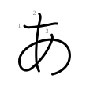 | い i 2 tr. · H01 | う u 2 tr. · H01 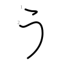 | え e 2 tr. · H01 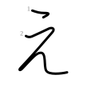 | お o 3 tr. · H01 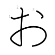 |
| か行 | か ka 3 tr. · H02 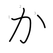 | き ki 4 tr. · H02 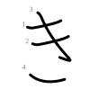 | く ku 1 tr. · H02 | け ke 3 tr. · H02 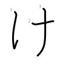 | こ ko 2 tr. · H02 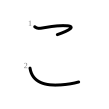 |
| さ行 | さ sa 3 tr. · H03 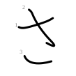 | し shi 1 tr. · H03 | す su 2 tr. · H03 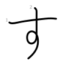 | せ se 3 tr. · H03 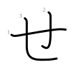 | そ so 1 tr. · H03 |
| た行 | た ta 4 tr. · H04 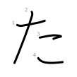 | ち chi 2 tr. · H04 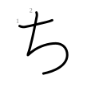 | つ tsu 1 tr. · H04 | て te 1 tr. · H04 | と to 2 tr. · H04 |
| な行 | な na 4 tr. · H05 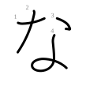 | に ni 3 tr. · H05 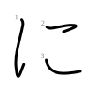 | ぬ nu 2 tr. · H05 | ね ne 2 tr. · H05 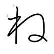 | の no 1 tr. · H05 |
| は行 | は ha 3 tr. · H06 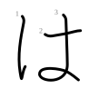 | ひ hi 1 tr. · H06 | ふ fu 4 tr. · H06 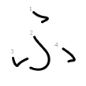 | へ he 1 tr. · H06 | ほ ho 4 tr. · H06 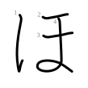 |
| ま行 | ま ma 3 tr. · H07 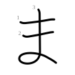 | み mi 2 tr. · H07 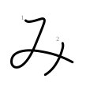 | む mu 3 tr. · H07 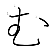 | め me 2 tr. · H07 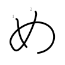 | も mo 3 tr. · H07 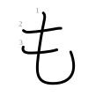 |
| や行 | や ya 3 tr. · H08 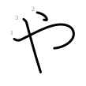 | ゆ yu 2 tr. · H08 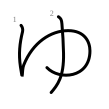 | よ yo 2 tr. · H08 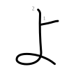 | ||
| ら行 | ら ra 2 tr. · H09 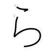 | り ri 2 tr. · H09 | る ru 1 tr. · H09 | れ re 2 tr. · H09 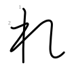 | ろ ro 1 tr. · H09 |
| わ行 | わ wa 2 tr. · H10 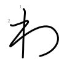 | を o 3 tr. · H10 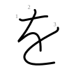 |
ん n 1 tr. · H10 |
| a | i | u | e | o | |
|---|---|---|---|---|---|
| が行 | が ga 5 tr. · H11 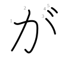 | ぎ gi 6 tr. · H11 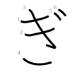 | ぐ gu 3 tr. · H11 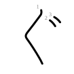 | げ ge 5 tr. · H11 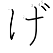 | ご go 4 tr. · H11 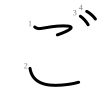 |
| ざ行 | ざ za 5 tr. · H11 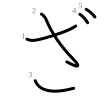 | じ ji 3 tr. · H11 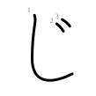 | ず zu 4 tr. · H11 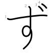 | ぜ ze 5 tr. · H11 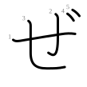 | ぞ zo 3 tr. · H11 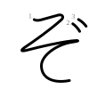 |
| だ行 | だ da 6 tr. · H12 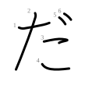 | ぢ ji 4 tr. · H12 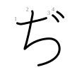 | づ zu 3 tr. · H12 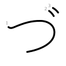 | で de 3 tr. · H12 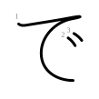 | ど do 4 tr. · H12 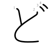 |
| ば行 | ば ba 5 tr. · H12 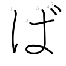 | び bi 3 tr. · H12 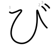 | ぶ bu 6 tr. · H12 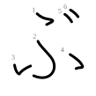 | べ be 3 tr. · H12 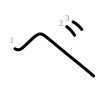 | ぼ bo 6 tr. · H12 |
| ぱ行 | ぱ pa 4 tr. · H13 | ぴ pi 2 tr. · H13 | ぷ pu 5 tr. · H13 | ぺ pe 2 tr. · H13 | ぽ po 5 tr. · H13 |
きゃ kya 7 tr. · H14 | きゅ kyu 6 tr. · H14 | きょ kyo 6 tr. · H14 |
しゃ sha 4 tr. · H14 | しゅ shu 3 tr. · H14 | しょ sho 3 tr. · H14 |
ちゃ cha 5 tr. · H14 | ちゅ chu 4 tr. · H14 | ちょ cho 4 tr. · H14 |
にゃ nya 6 tr. · H14 | にゅ nyu 5 tr. · H14 | にょ nyo 5 tr. · H14 |
ひゃ hya 4 tr. · H15 | ひゅ hyu 3 tr. · H15 | ひょ hyo 3 tr. · H15 |
みゃ mya 5 tr. · H15 | みゅ myu 4 tr. · H15 | みょ myo 4 tr. · H15 |
りゃ rya 5 tr. · H15 | りゅ ryu 4 tr. · H15 | りょ ryo 4 tr. · H15 |
ぎゃ gya 9 tr. · H16 | ぎゅ gyu 8 tr. · H16 | ぎょ gyo 8 tr. · H16 |
じゃ ja 6 tr. · H16 | じゅ ju 5 tr. · H16 | じょ jo 5 tr. · H16 |
びゃ bya 6 tr. · H16 | びゅ byu 5 tr. · H16 | びょ byo 5 tr. · H16 |
ぴゃ pya 5 tr. · H16 | ぴゅ pyu 4 tr. · H16 | ぴょ pyo 4 tr. · H16 |
| a | i | u | e | o | |
|---|---|---|---|---|---|
| あ行 | ア a 2 tr. · K01 | イ i 2 tr. · K01 | ウ u 3 tr. · K01 | エ e 3 tr. · K01 | オ o 3 tr. · K01 |
| か行 | カ ka 2 tr. · K02 | キ ki 3 tr. · K02 | ク ku 2 tr. · K02 | ケ ke 3 tr. · K02 | コ ko 2 tr. · K02 |
| さ行 | サ sa 3 tr. · K03 | シ shi 3 tr. · K03 | ス su 2 tr. · K03 | セ se 2 tr. · K03 | ソ so 2 tr. · K03 |
| た行 | タ ta 3 tr. · K04 | チ chi 3 tr. · K04 | ツ tsu 3 tr. · K04 | テ te 3 tr. · K04 | ト to 2 tr. · K04 |
| な行 | ナ na 2 tr. · K05 | ニ ni 2 tr. · K05 | ヌ nu 2 tr. · K05 | ネ ne 4 tr. · K05 | ノ no 1 tr. · K05 |
| は行 | ハ ha 2 tr. · K06 | ヒ hi 2 tr. · K06 | フ fu 1 tr. · K06 | ヘ he 1 tr. · K06 | ホ ho 4 tr. · K06 |
| ま行 | マ ma 2 tr. · K07 | ミ mi 3 tr. · K07 | ム mu 2 tr. · K07 | メ me 2 tr. · K07 | モ mo 3 tr. · K07 |
| や行 | ヤ ya 2 tr. · K08 | ユ yu 2 tr. · K08 | ヨ yo 3 tr. · K08 | ||
| ら行 | ラ ra 2 tr. · K09 | リ ri 2 tr. · K09 | ル ru 2 tr. · K09 | レ re 1 tr. · K09 | ロ ro 3 tr. · K09 |
| わ行 | ワ wa 2 tr. · K10 | ヲ o 3 tr. · K10 |
ン n 2 tr. · K10 |
| a | i | u | e | o | |
|---|---|---|---|---|---|
| が行 | ガ ga 4 tr. · K11 | ギ gi 5 tr. · K11 | グ gu 4 tr. · K11 | ゲ ge 5 tr. · K11 | ゴ go 4 tr. · K11 |
| ざ行 | ザ za 5 tr. · K11 | ジ ji 5 tr. · K11 | ズ zu 4 tr. · K11 | ゼ ze 4 tr. · K11 | ゾ zo 4 tr. · K11 |
| だ行 | ダ da 5 tr. · K12 | ヂ ji 5 tr. · K12 | ヅ zu 5 tr. · K12 | デ de 5 tr. · K12 | ド do 4 tr. · K12 |
| ば行 | バ ba 4 tr. · K12 | ビ bi 4 tr. · K12 | ブ bu 3 tr. · K12 | ベ be 3 tr. · K12 | ボ bo 6 tr. · K12 |
| ぱ行 | パ pa 3 tr. · K13 | ピ pi 3 tr. · K13 | プ pu 2 tr. · K13 | ペ pe 2 tr. · K13 | ポ po 5 tr. · K13 |
キャ kya 5 tr. · K14 | キュ kyu 5 tr. · K14 | キョ kyo 6 tr. · K14 |
シャ sha 5 tr. · K14 | シュ shu 5 tr. · K14 | ショ sho 6 tr. · K14 |
チャ cha 5 tr. · K14 | チュ chu 5 tr. · K14 | チョ cho 6 tr. · K14 |
ニャ nya 4 tr. · K14 | ニュ nyu 4 tr. · K14 | ニョ nyo 5 tr. · K14 |
ヒャ hya 4 tr. · K15 | ヒュ hyu 4 tr. · K15 | ヒョ hyo 5 tr. · K15 |
ミャ mya 5 tr. · K15 | ミュ myu 5 tr. · K15 | ミョ myo 6 tr. · K15 |
リャ rya 4 tr. · K15 | リュ ryu 4 tr. · K15 | リョ ryo 5 tr. · K15 |
ギャ gya 7 tr. · K16 | ギュ gyu 7 tr. · K16 | ギョ gyo 8 tr. · K16 |
ジャ ja 7 tr. · K16 | ジュ ju 7 tr. · K16 | ジョ jo 8 tr. · K16 |
ビャ bya 6 tr. · K16 | ビュ byu 6 tr. · K16 | ビョ byo 7 tr. · K16 |
ピャ pya 5 tr. · K16 | ピュ pyu 5 tr. · K16 | ピョ pyo 6 tr. · K16 |
っ (consonne doublée) 1 tr. · H17 | ッ (consonne doublée) 3 tr. · K17 | ー (voyelle longue) 1 tr. · K17 |
シェ she 6 tr. · K18 | チェ che 6 tr. · K18 | ツァ tsa 5 tr. · K18 | ツェ tse 6 tr. · K18 | ツォ tso 6 tr. · K18 | ティ ti 5 tr. · K18 |
ファ fa 3 tr. · K18 | フィ fi 3 tr. · K18 | フェ fe 4 tr. · K18 | フォ fo 4 tr. · K18 | ジェ je 8 tr. · K18 | ディ di 7 tr. · K18 |
デュ dyu 7 tr. · K18 | イェ ye 5 tr. · K19 | ウィ wi 5 tr. · K19 | ウェ we 6 tr. · K19 | ウォ wo 6 tr. · K19 | クァ kwa 4 tr. · K20 |
クィ kwi 4 tr. · K20 | クェ kwe 5 tr. · K20 | クォ kwo 5 tr. · K20 | ツィ tsi 5 tr. · K20 | トゥ tu 5 tr. · K20 | グァ gwa 6 tr. · K20 |
ドゥ du 7 tr. · K20 | ヴァ va 7 tr. · K19 | ヴィ vi 7 tr. · K19 | ヴ vu 5 tr. · K19 | ヴェ ve 8 tr. · K19 | ヴォ vo 8 tr. · K19 |
テュ tyu 5 tr. · K20 | フュ fyu 3 tr. · K20 | ヴュ vyu 7 tr. · K19 |
ゐ i 1 tr. · R | ゑ e 1 tr. · R | ヰ i 4 tr. · R | ヱ e 3 tr. · R |